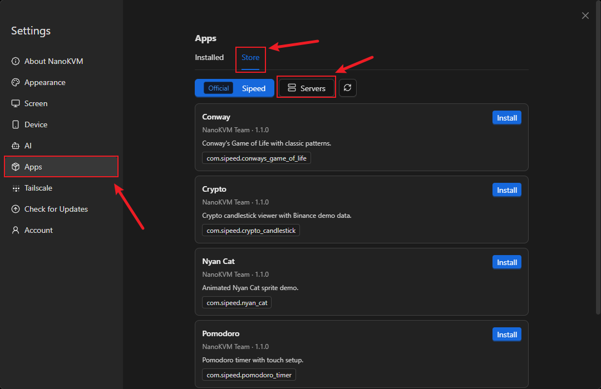
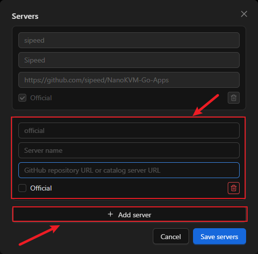
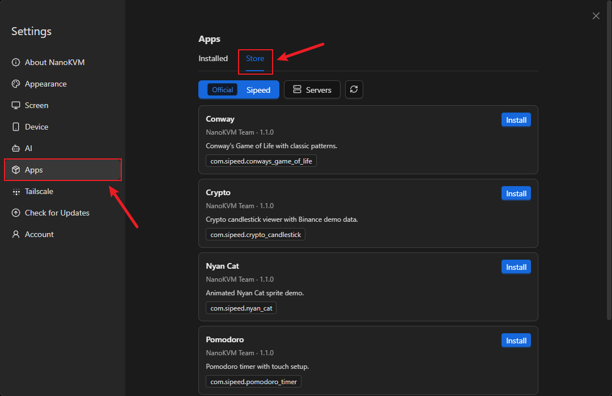
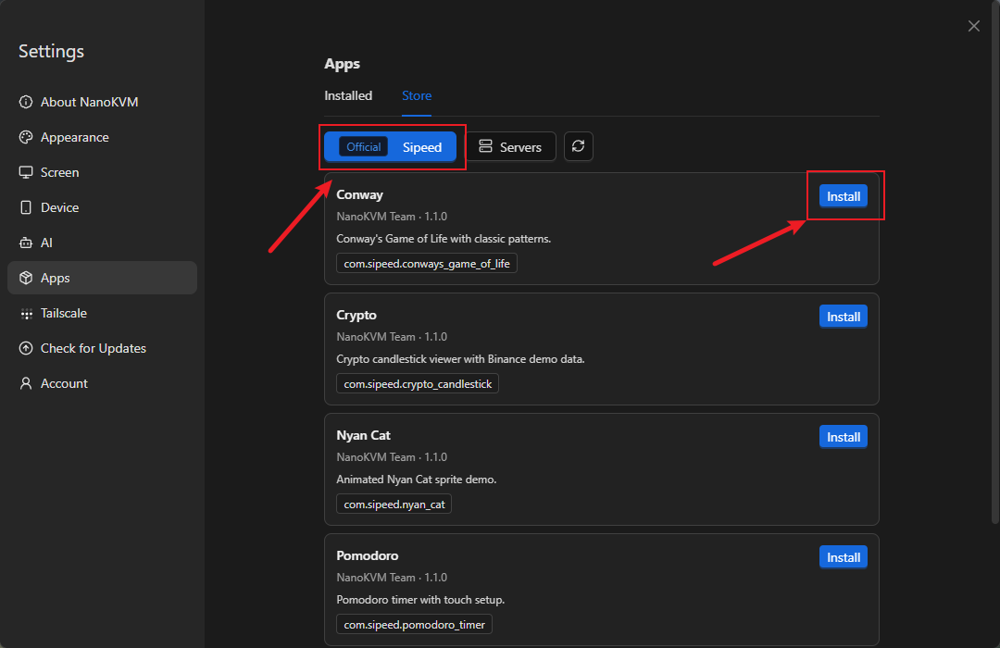
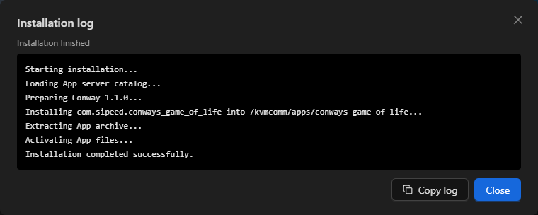
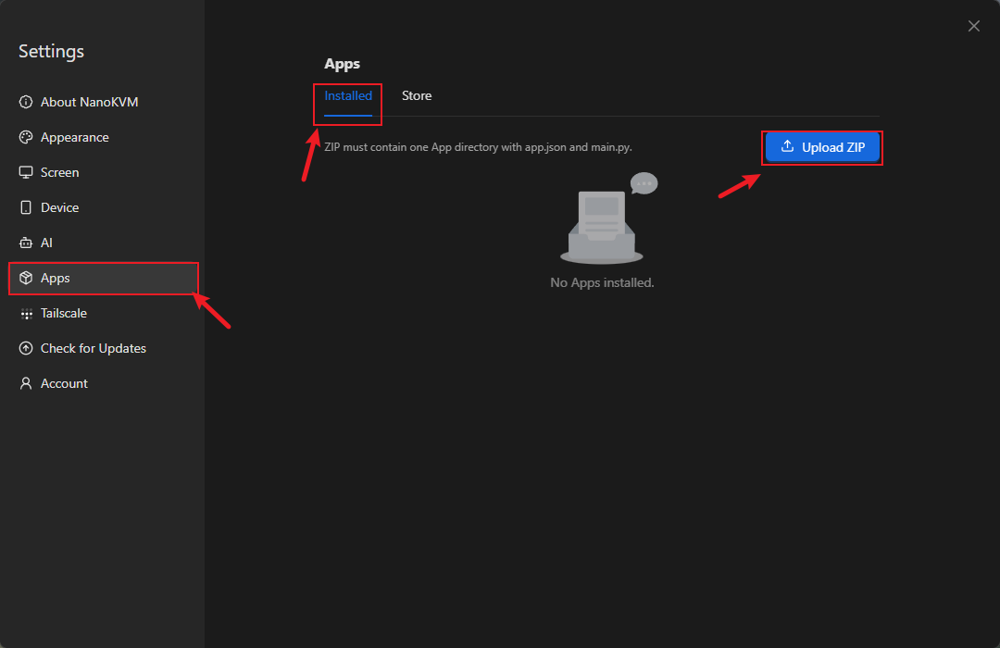
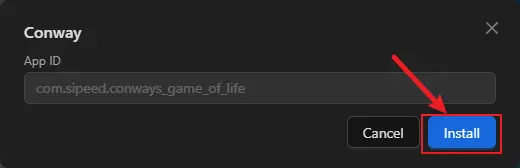
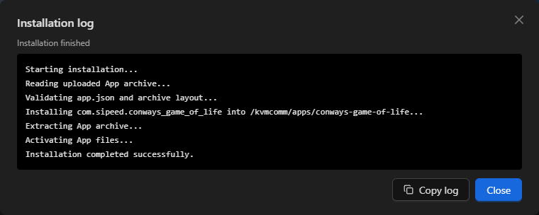
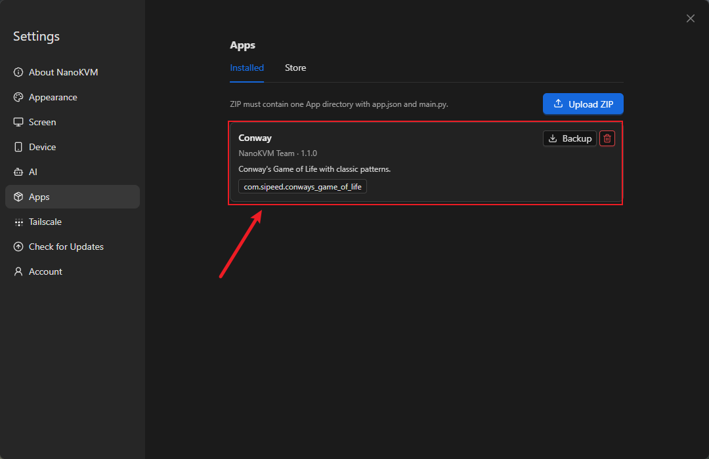

English
EnglishExtension: Custom Apps
Custom Apps
Introduction
A custom App is a full-screen Python application that runs on the NanoKVM Go touchscreen. It uses the appbase SDK provided by the device to draw on the RGB565 framebuffer and receive touch events. You can use custom Apps to turn the NanoKVM Go display into a status panel, timer, market dashboard, or another interactive tool.
NanoKVM Go provides a complete workflow for managing and running Apps:
App Server or local ZIP -> install and manage in the web interface -> launch from the device Apps page
Regular users can install and run existing Apps, while developers can write their own Python Apps, package them as ZIP files, and upload them to the device. This guide first explains how to install and use Apps, then uses a Hello World example to demonstrate development and deployment.
Prerequisites
Before starting, make sure that:
- the NanoKVM Go system and application are updated to the latest versions;
- the NanoKVM Go web interface is accessible from the local network;
- the touchscreen works correctly and the main interface includes an
Appspage; - NanoKVM Go can access the relevant App repository when installing from an App Server;
- a text editor, basic Python environment, and ZIP utility are available on the development computer when creating a custom App.
If the web settings do not include an
Appsoption, or the device does not have anAppspage, check for and install the latest NanoKVM Go system and application updates.
Install and Use Apps
Run a Built-in App
Open the Apps page on the device touchscreen and select a built-in App. These examples demonstrate full-screen rendering, animation, and touch interaction:
| App directory | Display name | Main feature |
|---|---|---|
conways-game-of-life |
Conway | Frame-limited animation |
crypto-candlestick |
Crypto | Market data and swipe navigation |
nyan-cat |
Nyan Cat | Animated pixel sprite |
pomodoro-timer |
Pomodoro | Buttons, taps, and a countdown timer |
Crypto uses a public market-data API and falls back to simulated data when the network is unavailable. It is intended only as an example of a network-enabled App.
Install an App from the App Store
An App Server is a repository from which NanoKVM Go can browse and download Apps. The Settings > Apps page has two sections:
Installed: manage installed Apps, including editing their configuration, downloading them, or removing them;Store: browse the official repository or a repository added by the user, and install Apps directly.
Whether you use the official repository or another App Server, first open the NanoKVM Go web interface and click the settings icon in the top toolbar.

Select an App Server
The official Sipeed repository, NanoKVM-Go-Apps, is preconfigured on the device. No additional App Server configuration is required when using this repository.
To use another App repository, open Settings > Apps, select Store, and click Servers.

Click Add server, enter the server name and URL, and save the configuration. You can then switch to that repository in the App Store.

Only add repositories that you trust. App installation scripts run with root privileges. If the page indicates that an App includes installation scripts, inspect its source code, configuration, and actual behavior before installing it.
Install an App
After selecting an App Server, install an App as follows:
- On the settings page, open
Apps > Store.

- Select the App Server and the App to install, then click
Install.

If the App requires environment variables, complete the form and confirm the installation.
Wait for the
Installation logwindow to report that installation has finished, then close the window.

The log shows repository access, validation, extraction, installation scripts, and the final result. If installation fails, copy the log or capture the error at the end before closing the window.
- Return to the
Settingpage on the device touchscreen and tap the Apps icon.

- Select the newly installed App to launch it.

Install an App from a ZIP File
You can upload a ZIP file to install an App obtained elsewhere or one that you developed yourself. The ZIP archive must contain exactly one top-level App directory:
example-app.zip
└── example-app/
├── app.json
├── main.py
└── assets/ # Optional resources
To install the ZIP file:
Open the NanoKVM Go web interface and go to
Settings > Apps > Installed;click
Upload ZIPand select the App ZIP file;

- after the web interface validates the ZIP file and
app.json, complete any requested App configuration;

- click
Installand wait for theInstallation logwindow to report success;

- open the
Appspage on the device touchscreen and select the App.
Exit an App
While an App is running full screen, use the reserved left-edge gesture to return to the Apps page:
- Touch and hold the left edge of the screen, then swipe right toward the center;
- keep holding while the upper and lower progress bars on the left edge move together and fill the edge;
- release your finger after the progress bars are full to exit the App.

To cancel, move your finger back to the left before releasing it. Release your finger after the two progress bars separate again, and the App will continue running:

Manage Installed Apps
On Settings > Apps > Installed, you can edit an App's environment variables, download its ZIP file, or remove it. After installing, deleting, or renaming an App, or modifying its app.json, the device list normally refreshes within about 10 seconds. You do not need to restart kvmcomm.

Develop a Custom App
Get the SDK and Examples
Public resources are available in NanoKVM-Go-Apps. The repository uses two independent branches:
main: the App Store catalog, App source code, and_utils;base: the sharedappbase.py,appbase.pyi, English and Chinese development guides, and_utils.
Use base for the SDK and API documentation when developing an App. Use main to browse, install, or learn from existing Apps. Both branches include _utils, so general tools such as the screen-recording script can be obtained from either branch.
Record the NanoKVM Go device display
The _utils/record-nanokvm-fb0.sh script in the public repository reads the device's fb0 and encodes it as a video on the local computer. It is useful for App demonstrations and reproducing issues.
The script reads the framebuffer from the NanoKVM Go through ssh; it does not use scp. The local computer needs Bash, ssh, and ffmpeg. Before using the script, also make sure that the computer can sign in to the device without a password:
ssh root@<DEVICE_IP> 'echo ok'
If the local computer does not have an SSH key yet, create one in a local terminal:
ssh-keygen -t ed25519
Then copy the public key to the NanoKVM Go and verify the login again:
ssh-copy-id root@<DEVICE_IP>
ssh root@<DEVICE_IP> 'echo ok'
When the last command prints ok without asking for a password, passwordless SSH is ready.
Clone the repository and enter the
_utilsdirectory in a local terminal:git clone https://github.com/sipeed/NanoKVM-Go-Apps.git cd NanoKVM-Go-Apps/_utilsConfirm that the required commands are available on the local computer:
command -v ssh command -v ffmpegIf either command does not print a path, install the corresponding tool before continuing.
Set the actual NanoKVM Go address through
NANOKVM_HOST, then run the script:chmod +x record-nanokvm-fb0.sh NANOKVM_HOST=root@<DEVICE_IP> ./record-nanokvm-fb0.sh xxx.mp4Operate the App on the device touchscreen while recording. Press
Ctrl-Cin the local terminal when finished. The script stops capturing, saves the video, and prints its location.NANOKVM_HOSTapplies only to this command, so you do not need to modify the script. On Windows 10/11, run the Bash script through Git Bash or WSL and install bothsshandffmpegin the same environment.
Create Your First Hello World App
App Directory Structure
Each App uses a separate directory. Use lowercase English letters and hyphens for the directory name, for example, hello-world:
hello-world/
├── app.json
├── main.py
├── assets/ # Optional resources, such as icon.png
├── pre-install.sh # Optional; required only when app.json declares pre_script
└── post-install.sh # Optional; required only when app.json declares post_script
The launcher scans direct child directories of launcher.apps_dir, which defaults to /kvmcomm/apps. A directory appears on the Apps page only when all of the following conditions are met:
- its name does not start with
_; - it contains a regular file named
main.py; - it contains a valid
app.json; app.json.app_idis a valid reverse-domain package name and matches the directory name;app.json.nameis a non-empty string.
The Apps list refreshes automatically. After adding, deleting, or renaming an App, or modifying its app.json, wait about 10 seconds. You do not need to restart kvmcomm.
Write the Manifest and Entry Point
Add the minimal App manifest to hello-world/app.json:
{
"app_id": "com.example.hello_world",
"name": "Hello World",
"creator": "Your Name",
"create_time": "2026-07-30",
"version": "1.0.0",
"desc": "A minimal NanoKVM App.",
"category": "demo"
}
app_id, name, creator, create_time, and version are required. desc, category, and icon are optional. app_id must have at least three components. Its final component must equal the directory name with each - replaced by _; for example, hello-world maps to com.example.hello_world. This minimal example does not configure an icon. When adding one later, set icon to a resource path relative to the App directory.
If the App needs environment variables, define them in the app.json.env object. The web interface automatically creates a configuration form, and the App reads the values through ctx.env. Do not create a separate .env file.
If an App needs to install dependencies or generate configuration during its first installation, declare optional lifecycle scripts in the same app.json. The following continues with hello-world and shows a complete manifest that includes environment variables and lifecycle scripts:
{
"app_id": "com.example.hello_world",
"name": "Hello World",
"creator": "Your Name",
"create_time": "2026-07-30",
"version": "1.0.0",
"desc": "A configurable NanoKVM App.",
"category": "demo",
"env": {
"GREETING": {
"label": "Greeting",
"default": "Hello",
"required": true,
"secret": false,
"description": "Text displayed on the screen"
}
},
"pre_script": "pre-install.sh",
"post_script": "post-install.sh"
}
Note:
env,pre_script, andpost_scriptare not separate JSON files, and they must not be written after the outerapp.jsonbraces. Put them in the same{ ... }object asapp_id,name, and the other manifest fields, separated by commas. If your App does not need these features, do not add these fields to the manifest.
When the manifest declares pre_script or post_script, the corresponding script must exist in the App directory and must be included in the ZIP archive; otherwise, installation fails. Remove a script field from the manifest if the App does not need that lifecycle script.
pre_scriptruns before deployment. If it fails, the App is not installed;post_scriptruns after the App files are deployed. If it fails, the installation is rolled back;- each path must be a safe relative path inside the App directory, which is also the script's working directory;
- scripts can read the configuration from
app.json.env, as well asNANOKVM_APP_DIR,NANOKVM_APP_ID, andNANOKVM_APP_PHASE; - scripts run through
/bin/bashwith root privileges, so only install Apps from trusted sources.
Put one-time work such as dependency installation and directory initialization in lifecycle scripts. Do not require regular users to sign in over SSH and manually run apt install or pip install. Scripts should be safe to run repeatedly and should use non-interactive options so that the installation page does not wait indefinitely for input.
Add the minimal program to hello-world/main.py:
#!/usr/bin/env python3
from appbase import AppContext, WHITE, app
@app()
def main(ctx: AppContext) -> None:
greeting = ctx.env.get("GREETING", "Hello")
def tick(dt: float) -> None:
ctx.fb.clear(0)
ctx.fb.text_center(
ctx.width // 2,
ctx.height // 2,
greeting,
WHITE,
2,
)
ctx.run(tick, fps=10)
if __name__ == "__main__":
main()
@app() reads app.json from the same directory, opens the framebuffer and touch device, creates the AppContext, and cleans up resources when the App exits. Keep the if __name__ == "__main__" guard so that importing the module from another tool does not open hardware devices unexpectedly.
Package, Upload, and Launch
Get an example from NanoKVM-Go-Apps, or create the hello-world directory locally. The web uploader requires the ZIP file to contain exactly one top-level App directory:
hello-world.zip
└── hello-world/
├── app.json
├── main.py
├── assets/ # Optional
├── pre-install.sh # Required only when declared in app.json
└── post-install.sh # Required only when declared in app.json
Create the archive in a local terminal:
zip -r hello-world.zip hello-world
Install hello-world.zip by following Install an App from a ZIP File. During installation:
- if
app.json.envis defined, the web interface displays an environment-variable form before installation; - the
Installation logdisplays upload, validation, extraction, and lifecycle-script output in real time. Keep it open until installation succeeds; - if installation fails, save the complete log and use the final error messages to correct the App or its configuration;
- after installation succeeds, open the
Appspage on the device touchscreen and selectHello World.
The installation log records only the current operation. When troubleshooting, copy or capture at least the final lines before closing it.
Advanced: Deploy from the command line with SSH/SCP
For debugging or automation, copy the directory directly over SSH/SCP from a local terminal. The destination is still launcher.apps_dir, which defaults to /kvmcomm/apps:
scp -r hello-world root@<DEVICE_IP>:/kvmcomm/apps/
ssh root@<DEVICE_IP> 'python3 -m py_compile /kvmcomm/apps/hello-world/main.py'
After copying the directory, wait for the Apps list to refresh. Do not overwrite the shared appbase.py or appbase.pyi already on the device unless you have confirmed that the SDK and App versions match.
Common APIs
AppContext, Lifecycle, and Main Loop
In the previous Hello World example, main() receives an argument named ctx:
@app()
def main(ctx: AppContext) -> None:
...
ctx is the conventional abbreviation for “context,” and its type is AppContext. Here, a context is the collection of resources an App needs while it is running, including the framebuffer drawing object, touch input, display dimensions, and environment variables configured in the web interface.
Developers do not create ctx manually, and it is not a global variable. The @app() decorator wraps the original main(ctx) function in an entry point that takes no arguments. The complete loading and execution sequence is:
Load main.py and define main(ctx)
-> @app() reads and validates app.json and its environment configuration,
then creates an entry point that takes no arguments
-> the guard at the end of the file calls the decorated main()
-> open the framebuffer and touch device
-> create an AppContext object
-> pass that object to the original main(ctx) as ctx
-> close the touch device and framebuffer after the App exits
The argument does not have to be named ctx; context would work as well. This guide and the official examples consistently use the conventional shorter name.
Common AppContext members include:
| API | Purpose |
|---|---|
ctx.width, ctx.height |
Full logical framebuffer dimensions after rotation |
ctx.fb |
Drawing object |
ctx.touch |
Low-level touch reader, normally accessed through the helper methods below |
ctx.env |
Read-only environment mapping built from the env field in app.json and the Launcher configuration |
ctx.poll() |
Return a list of pending (kind, x, y) touch events |
ctx.taps() |
Return tap coordinates only and ignore swipe events |
ctx.button(rect, label, bg, fg, scale) |
Draw a button and return the same Rect for touch hit-testing |
ctx.flush() |
Submit the back buffer to the display |
ctx.run(tick, fps, on_tap, on_swipe) |
Limit frame rate, dispatch touch input, and refresh automatically |
Most Apps can use ctx.run() directly as their main loop. On every frame, it performs these steps:
- Read touch events and dispatch taps and swipes to
on_tapandon_swipe; - Call
tick(dt)once to update state and draw the current frame; - Call
ctx.flush()automatically to present the back buffer on the display; - Wait for the next frame according to
fps, preventing the loop from consuming an entire CPU core.
The dt argument passed to tick(dt) is the number of seconds elapsed since the previous frame, which is useful for animations and timers. Returning False from tick() ends the main loop. main(ctx) then returns, and @app() cleans up the hardware resources.
Therefore, when using ctx.run(), do not call flush() again inside tick(), and do not independently open or close the same framebuffer or touch device. An App that does not need continuous updates can instead organize its own flow with ctx.poll() and ctx.flush().
Drawing, Colors, and Buttons
ctx.fb provides clear(), put_pixel(), fill_rect(), draw_line(), draw_text(), text_center(), draw_sprite(), and flush(). Create colors with rgb565(r, g, b) or use the SDK constants:
BLACK WHITE RED GREEN BLUE YELLOW GRAY DKGRAY
ORANGE CYAN MAGENTA NAVY
Use the same Rect to draw a button and test whether it was tapped:
from appbase import AppContext, GREEN, RED, Rect, app
@app()
def main(ctx: AppContext) -> None:
state = {"count": 0}
add_button = Rect(70, 80, 100, 48)
def on_tap(x: int, y: int) -> None:
if add_button.contains(x, y):
state["count"] += 1
def tick(dt: float) -> None:
ctx.fb.clear(0)
ctx.button(add_button, "ADD", GREEN)
ctx.fb.text_center(ctx.width // 2, 145, str(state["count"]), RED, 2)
ctx.run(tick, fps=20, on_tap=on_tap)
if __name__ == "__main__":
main()
Resources and Relative Paths
The launcher changes the current working directory to the App directory, so relative paths such as assets/icon.png work directly. To support importing or testing from another directory, calculate paths from __file__:
from pathlib import Path
APP_DIR = Path(__file__).resolve().parent
icon_path = APP_DIR / "assets" / "icon.png"
Development Notes
Display Dimensions and Hidden Area
The physical framebuffer is 284×240, and its leftmost 14 columns are not visible. The host normally launches Apps with rotate=90, producing a 240×284 logical canvas whose bottom 14 rows are hidden. When the display is inverted, the host uses rotate=270, moving the hidden area to the top.
rotate |
Logical dimensions | Hidden area | Visible logical area |
|---|---|---|---|
0 |
284×240 |
Left 14 columns | x=14..283, y=0..239 |
90 |
240×284 |
Bottom 14 rows | x=0..239, y=0..269 |
180 |
284×240 |
Right 14 columns | x=0..269, y=0..239 |
270 |
240×284 |
Top 14 rows | x=0..239, y=14..283 |
Always base the layout on ctx.width, ctx.height, and ctx.fb.rotate; do not hard-code a fixed canvas. Use the table above when calculating the visible area.
Touch Interaction
ctx.poll() returns tap, up, down, left, and right events. Their coordinates are already transformed into the rotated logical coordinate system.
The host reserves the left-edge exit gesture. Avoid placing controls that require horizontal swipes on the left edge, because they could be triggered while a user exits the App. The host refuses to launch an App if the touch device is unavailable.
Runtime and Security
The runtime requires an available /dev/fb0, the /dev/input/event0 touch device, Python 3, and the launcher enabled in the device configuration. Configure non-default device paths with environment variables:
| Variable | Default | Purpose |
|---|---|---|
APPBASE_FB_DEVICE |
/dev/fb0 |
Framebuffer device |
APPBASE_FB_ROTATE |
0 |
Rotation angle; the host normally sets 90 or 270 |
APPBASE_TOUCH_DEVICE |
/dev/input/event0 |
Touch input device |
Apps may run with elevated privileges and can access device configuration, credentials, and the network. Deploy only trusted code, do not store secrets in source files, and do not install dependencies from unknown sources. The appbase.py and appbase.pyi versions on the device must match.
Simulator and AI-assisted Development
The x86 SDL simulator only reads directories and displays the Apps list. It does not execute Python, map the framebuffer, read touch input, or simulate the exit gesture. Test the display, colors, orientation, and frame rate on a physical NanoKVM Go.
Before asking an AI assistant to write an App, provide it with the device README, existing App source code, and your requirements:
Advanced: Read the runtime guide from the device
ssh root@<DEVICE_IP> 'cat /kvmcomm/apps/README.md'
Explicitly require the directory-based architecture: generate both app.json and main.py, do not place a standalone Python file loosely in the Apps directory, and do not overwrite the shared SDK.
Release Checklist
An App is ready to share after it passes the following checks:
- all required
app.jsonfields are present, and directory names and resource paths are correct; main.pypassespy_compile;- the App appears on the Apps page and launches successfully;
- no content is placed in the 14-pixel hidden area;
- taps, swipes, and the left-edge exit gesture work correctly;
- the main interface and touch controls recover after the App exits;
- no secrets, real IP addresses, or private device data are embedded in code or resources.